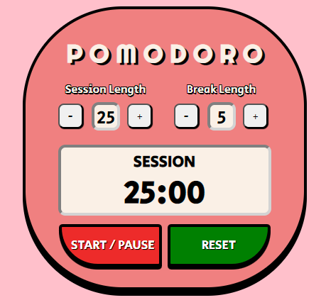

<div class="project-display">
  <a onClick="hideProject()" class="exit-project-info"
    ><i class="fa fa-solid fa-arrow-left"></i> All Projects</a
  >
  <h4 class="eng">Pomodoro Timer</h4>
  <!-- <h4 class="kor" lang="ko">포모도로 타이머</h4> -->
  
  <!-- Logos show languages/frameworks used -->
  <span class="coding-languages">
    <i class="devicon-html5-plain-wordmark colored"></i>
    <i class="devicon-css3-plain-wordmark colored"></i>
    <i class="devicon-javascript-plain colored"></i>
    <i class="devicon-react-original-wordmark colored"></i>
  </span>

  <!-- Brief description -->
  <p class="project-description">
    React Pomodoro Timer App, featuring adjustable session and break lengths.
  </p>

  <!-- Links to github & demo -->
  <span class="demo-links">
    <p>Code & Demo links:</p>
    <a
      href="https://github.com/domfinlay/Pomodoro-Timer"
      target="_blank"
      style="text-decoration: none"
      ><i class="fa fa-github"></i
    ></a>
    <a
      href="https://codepen.io/serifim/pen/VwEEeKx"
      target="_blank"
      style="text-decoration: none"
      ><i class="devicon-codepen-plain colored"></i></a
  ></span>
</div>
